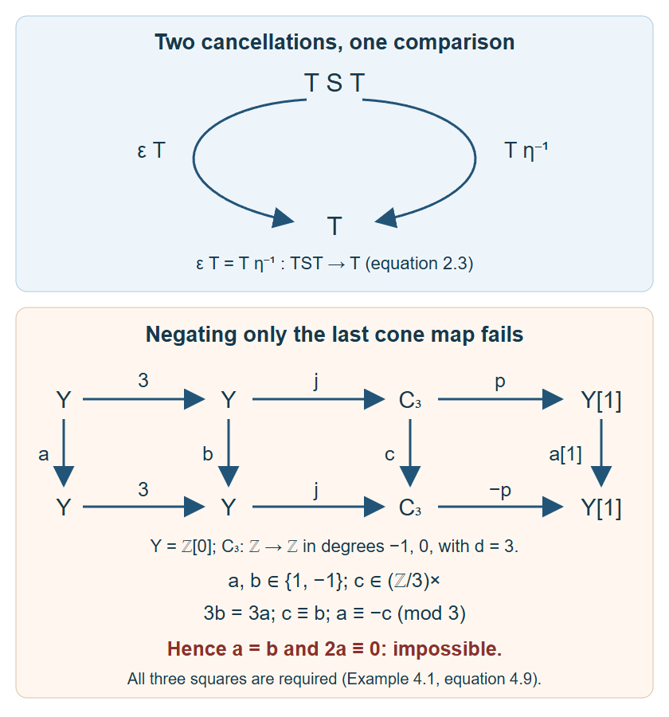

Draft lesson.
Translations, coherent powers and universal triangle comparisons
Original text public domain (CC0).
A translation is an equivalence, with inverse comparisons rather than an equality of inverse functors. Its integer powers can nevertheless be made coherent. Triangle arguments also depend on specified maps: changing an arrow sign, completing a square, or summing a family must preserve the last arrow into the translated first object. We construct the power comparisons, exhibit the sign obstruction in a concrete cone, and prove the universal comparison results for arbitrary triangulated categories.
Use the ambient Choice and universe conventions of Universes and small categories. We assume categories, functors and natural transformations. Formal linear combinations and finite sums, Section 1 supplies the actual biproduct identities and proves that a fully faithful functor between additive categories is additive. In particular a translation equivalence between additive categories is additive. Chain homotopies, mapping cones and triangles, Sections 1–6, proves the homotopy category, cone conventions and all triangle axioms. Triangles, finite universal maps and the limits of cohomology, Lemma 1.1 proves exact Hom sequences in both variances for every triangulated category.
1. Translation data and its actual inverse
A category with translation is a category \(\mathcal D\) with an equivalence \(T: \mathcal D\to\mathcal D\). A translation-compatible functor to \((\mathcal E,U)\) consists of a functor \(F\) and a specified natural isomorphism
\[ \xi: FT\longrightarrow UF. \tag{1.1} \]The compatible natural transformations \(a: (F,\xi)\to(F',\xi')\) obey
\[ U(a_X)\xi_X=\xi'_X a_{TX}. \tag{1.2} \]Identity and vertical composition preserve (1.2), by substitution and cancellation of the intermediate equation. If \((G,\zeta): (\mathcal E,U)\to(\mathcal B,V)\), the composite has comparison
\[ GFT\xrightarrow{G\xi}GUF\xrightarrow{\zeta F}VGF. \tag{1.3} \]Naturality of each factor proves naturality of (1.3). For additive categories we require the compatible functors to be additive. A translation subcategory has the restricted functor as an equivalence of that subcategory; invariance in only one direction does not by itself establish this condition. Fullness is a separate property.
Choose a quasi-inverse \(S\) and a natural isomorphism \(\epsilon: TS\to1\). We can choose a unit \(\eta:1\to ST\) such that
\[ (\epsilon T)(T\eta)=1_T, \qquad(S\epsilon)(\eta S)=1_S. \tag{1.4} \]Here composition is right to left; adjoining a functor means whiskering a natural transformation.
Lemma 1.1. Such a unit exists. If \(S'\) has counit \(\epsilon': TS'\to1\), there is a unique natural isomorphism \(q: S\to S'\) satisfying \(\epsilon'\,Tq=\epsilon\). It also preserves the units chosen by (1.4).
Proof. Full faithfulness of \(T\) gives a unique component \(\eta_X: X\to STX\) with \(T\eta_X=\epsilon_{TX}^{-1}\). Naturality of \(\epsilon\), and faithfulness of \(T\), give naturality of \(\eta\). Each component is invertible: lift the inverse under full faithfulness and use faithfulness to check both inverse equations. The first equation of (1.4) is its definition.
Naturality of \(\epsilon\) at \(\epsilon_X: TSX\to X\) gives
\[ \epsilon_X\epsilon_{TSX}=\epsilon_X TS(\epsilon_X). \tag{1.5} \]Cancel \(\epsilon_X\). Applying \(T\) to the second expression in (1.4) now gives \(TS(\epsilon_X)\epsilon_{TSX}^{-1}=1\); faithfulness proves that expression is \(1_S\).
For the comparison, define \(q_X\) uniquely by
\[ Tq_X=(\epsilon'_X)^{-1}\epsilon_X. \tag{1.6} \]The same naturality and inverse-lifting argument proves that this is a natural isomorphism. Equation (1.6) proves both compatibility with the counits and uniqueness. Applying \(T\) to \(q_{TX}\eta_X\) gives \((\epsilon'_{TX})^{-1}\); this is also \(T\eta'_X\). Faithfulness yields \(q_{TX}\eta_X=\eta'_X\), the unit compatibility. \(\square\)
The restriction in this uniqueness assertion matters. On vector spaces over \(\mathbb F_3\), the identity functor has the two distinct natural isomorphisms multiplication by one and multiplication by two. Both commute with every linear map, and two is its own inverse. They differ on the one-dimensional space. Thus even positive powers of the identity equivalence are not unique up to an unrestricted unique natural isomorphism. Lemma 1.1 asserts uniqueness with specified inverse data.
2. Coherent powers from the cancellation equations
For \(n\in\mathbb Z\), set
\[ P_n=\begin{cases}T^n,&n>0,\\1,&n=0,\\S^{-n},&n<0.\end{cases} \tag{2.1} \]We will construct comparisons \(\mu_{m,n}: P_mP_n\to P_{m+n}\), with identity unit comparisons and
\[ \mu_{m+n,r}(\mu_{m,n}P_r) =\mu_{m,n+r}(P_m\mu_{n,r}). \tag{2.2} \]Consider finite words in the two letters \(T,S\), interpreted as composites of endofunctors. Delete adjacent \(TS\) using \(\epsilon\), or adjacent \(ST\) using \(\eta^{-1}\), whiskered by the rest of the word. Each deletion reduces the length by two. A word with no such pair consists entirely of one letter, or is empty. Its signed exponent therefore determines its reduced word, namely (2.1).
Theorem 2.1. Every sequence of these deletions gives the same natural isomorphism to the reduced word. Reducing the concatenated words for \(P_m,P_n\) gives comparisons satisfying (2.2).
Proof. Disjoint deletions commute by the interchange law for natural transformations. Overlapping deletions can occur only in \(TST\) and \(STS\). Their two maps to the remaining letter are
\[ \epsilon T=T\eta^{-1}, \qquad S\epsilon=\eta^{-1}S, \tag{2.3} \]exactly the two triangle identities (1.4). These are all local ambiguities.
Induct on word length to compare two complete deletion sequences. If their first deletion agrees, compare their remaining sequences by induction. If the first deletions are disjoint, perform both to reach the same shorter word; their initial composites agree by interchange. If they overlap, (2.3) gives the same shorter word and equal initial maps. Every resulting word is shorter than the original one, so induction identifies all its remaining maps to the reduced word. This proves equality of the original two composites, including words with an empty reduction.
Define \(\mu_{m,n}\) by any deletion sequence on the concatenation. It is natural and invertible because all the deletion maps are. An empty concatenated factor needs no deletions, so \(\mu_{0,n}=\mu_{n,0}=1\). The two sides of (2.2) are complete reductions of the same three concatenated words. The independence just proved makes them equal. This proves coherence for all signs, including crossings through exponent zero. \(\square\)
In particular \(P_1=T\), \(P_{-1}=S\), \(\mu_{1,-1}=\epsilon\), and \(\mu_{-1,1}=\eta^{-1}\), with the actual prescribed maps retained. The case of several commuting generators is proved in Coherent integer actions from commuting equivalences, Sections 2–4; there the additional overlap is the three-generator exchange equation.
A second inverse with fixed counit gives the comparison of Lemma 1.1 on every \(S\)-letter and the identity on every \(T\)-letter. Both cancellation squares commute by its unit/counit compatibility. Therefore these word comparisons descend to coherent comparisons between every pair of powers. They are unique among coherent comparisons fixing \(P_1=T\): the equation at \((1,-1)\) forces the inverse comparison by full faithfulness of \(T\), and the equations for repeated negative factors force all other negative-power comparisons. Positive-power comparisons are forced from the identity at the positive generator. This is the qualified uniqueness supplied by the chosen data.
When the data are unambiguous, we write \(TX\) for \(T(X)\), and may leave \(T\) implicit in the name of its category. These are abbreviations, with no additional existence or uniqueness assertion.
3. Why a two-variable shift anticommutes
For a biadditive functor \(B: \mathcal D\times\mathcal E\to\mathcal A\), let \(T,U,V\) be the respective translations. A signed translation structure specifies natural isomorphisms
\[ \theta_{X,Y}: B(TX,Y)\to VB(X,Y), \qquad\psi_{X,Y}: B(X,UY)\to VB(X,Y) \tag{3.1} \]satisfying the actual equation
\[ V(\psi_{X,Y})\theta_{X,UY} =-V(\theta_{X,Y})\psi_{TX,Y}. \tag{3.2} \]Both sides start at \(B(TX,UY)\) and end at \(V^2B(X,Y)\). The minus sign is an additive Hom-group operation, not an informal change of a diagram label.
Here is a complete complex example explaining it. For bounded cohomological complexes of vector spaces over a field, form the finite total tensor product
\[ (X\otimes Y)^n=\bigoplus_{p+q=n}X^p\otimes Y^q, \qquad d(x\otimes y)=dx\otimes y+(-1)^p x\otimes dy. \tag{3.3} \]The two mixed terms of \(d^2\) have coefficients \((-1)^{p+1}\) and \((-1)^p\), so cancel; the other terms contain squared differentials and vanish. Tensoring chain maps is a chain map by substitution into (3.3), respects identities and composition, and is additive in each variable. Boundedness makes the displayed sums finite in every degree and keeps the resulting complex bounded. This example concerns the additive categories of complexes and their chain maps.
Use \(X[1]^p=X^{p+1}\), with differential \(-d_X\). The left comparison
\[ \theta: X[1]\otimes Y\to(X\otimes Y)[1] \tag{3.4} \]is the identity on the relabelled tensor components. In a component with \(x\in X^{p+1}\), both differentials are \(-dx\otimes y+(-1)^p x\otimes dy\). The right comparison
\[ \psi: X\otimes Y[1]\to(X\otimes Y)[1], \qquad x\otimes y\longmapsto(-1)^p x\otimes y \tag{3.5} \]uses \(x\in X^p\). Applying the target differential after (3.5) gives \((-1)^{p+1}dx\otimes y-x\otimes dy\). Applying (3.5) after the source differential gives the same two terms, since the degree of \(dx\) is \(p+1\). Both comparisons are natural isomorphisms, with inverse given by the same component signs.
On \(X[1]\otimes Y[1]\), let \(x\) have shifted degree \(p\). The route using the left comparison first then the shifted right comparison has coefficient \((-1)^{p+1}\). The route using the right comparison first then the shifted left comparison has coefficient \((-1)^p\). They differ by minus one, proving (3.2), with its complete domain and codomain. In characteristic two the additive minus sign equals the plus sign; the same equation remains valid.
4. Whole triangles and the sign convention
A triangle in an additive category with translation is the entire sequence
\[ X\xrightarrow fY\xrightarrow gZ\xrightarrow hTX. \tag{4.1} \]A triangle morphism to \((X',Y',Z',f',g',h')\) is \((a,b,c)\) with
\[ bf=f'a,\qquad cg=g'b,\qquad T(a)h=h'c. \tag{4.2} \]Its fourth component is \(T(a)\), not another independent map. Component identities give identity triangle morphisms. For two successive morphisms, substitute their three equations and use functoriality of \(T\) to obtain (4.2) for their componentwise composite. Associativity follows from the original category, so these data form a category of triangles. An isomorphism is exactly a morphism with its three vertex maps invertible: their inverses satisfy the three equations after cancellation.
If \(\varepsilon_i\in\{1,-1\}\) and \(\varepsilon_1\varepsilon_2\varepsilon_3=1\), changing the three arrows to \(\varepsilon_1f,\varepsilon_2g,\varepsilon_3h\) gives an isomorphic triangle. Its vertex maps from (4.1) are
\[ 1_X,\qquad\varepsilon_1 1_Y,\qquad\varepsilon_1\varepsilon_2 1_Z. \tag{4.3} \]The first two squares follow immediately. The last becomes \(h=\varepsilon_3\varepsilon_1\varepsilon_2h\), which is the stated product condition. These maps are their own inverses.
We use the rotation convention
\[ Y\xrightarrow gZ\xrightarrow hTX\xrightarrow{-Tf}TY. \tag{4.4} \]The alternative rotation with arrows \(-g,-h,-Tf\) is isomorphic to (4.4), with vertex maps \((1_Y,-1_Z,1_{TX})\). Its last square uses \(T(1_Y)=1_{TY}\). Thus both rotation axioms describe the same distinguished triangles.
For precision, a triangulated category is an additive category with translation and a specified collection of distinguished triangles satisfying the following conditions: isomorphism closure; the identity triangle \(X\xrightarrow1X\to0\to TX\); distinguished completion of every arrow; distinguishedness equivalent to distinguishedness of (4.4); completion of every commuting first square to all three squares (4.2); and the following full octahedral condition. These are the definitions in Stacks, Section 13.3, with the identity, existence and isomorphism clauses listed separately here.
For composable \(X\xrightarrow fY\xrightarrow gZ\), prescribe distinguished triangles
\[ \begin{gathered} X\xrightarrow fY\xrightarrow{j_f}Q_f\xrightarrow{d_f}TX,\\ X\xrightarrow{gf}Z\xrightarrow{j_{gf}}Q_{gf}\xrightarrow{d_{gf}}TX,\\ Y\xrightarrow gZ\xrightarrow{j_g}Q_g\xrightarrow{d_g}TY. \end{gathered} \tag{4.5} \]There must be maps \(u: Q_f\to Q_{gf}\), \(v: Q_{gf}\to Q_g\) such that
\[ Q_f\xrightarrow uQ_{gf}\xrightarrow vQ_g \xrightarrow{(Tj_f)d_g}TQ_f \tag{4.6} \]is distinguished and
\[ u j_f=j_{gf}g,\quad d_{gf}u=d_f, \quad vj_{gf}=j_g,\quad d_gv=(Tf)d_{gf}. \tag{4.7} \]These are exactly the two required triangle morphisms with first two vertex pairs \((1_X,g)\) and \((f,1_Z)\); the last arrow in (4.6) is prescribed as well. The axiom applies to the three triangles already given, not just to newly chosen cone representatives. The homotopy prerequisite proves this full form by explicit cone maps and transports it to arbitrary prescribed triangles.
Example 4.1 (an odd sign really changes a triangle). In \(K^b(\mathsf{Ab})\), let \(Y=\mathbb Z[0]\) and let \(C_m\) have \(\mathbb Z\) in degrees \(-1,0\), differential \(m\ge2\). Its distinguished cone triangle is
\[ Y\xrightarrow mY\xrightarrow jC_m\xrightarrow pY[1]. \tag{4.8} \]A chain endomorphism of \(C_m\) has two integer components \(a,b\) with \(ma=bm\), hence \(a=b\). A homotopy changes both by \(m\) times the same integer. Thus its homotopy endomorphisms are \(\mathbb Z/m\), and its automorphisms are the invertible residue classes. Maps \(Y\to C_m\) are degree-zero integers, modulo homotopies that add multiples of \(m\). Maps \(C_m\to Y[1]\) are degree-minus-one integers, again modulo multiples of \(m\). In these descriptions \(j,p\) are the classes of one. Endomorphisms of \(Y\) are integers, with no nonzero homotopy between them; its automorphisms are therefore \(1,-1\).
Suppose (4.8) were isomorphic to the triangle changing only \(p\) to \(-p\). Its first two vertex maps would be integers \(a,b\in\{1,-1\}\), and its third a unit \(c\in\mathbb Z/m\). The three squares force
\[ bm=ma,\qquad c\equiv b\pmod m, \qquad a\equiv-c\pmod m. \tag{4.9} \]The first gives \(a=b\); the remaining ones give \(2a\equiv0\pmod m\). For \(m=3\) this is impossible. Thus an arrow-sign product minus one gives no general triangle-isomorphism assertion, even starting from this actual distinguished triangle with nonzero connecting map.

The upper diagram records the exact cancellation identity of Theorem 2.1, equation (2.3). The lower diagram keeps the connecting map and every vertex comparison in Example 4.1, equations (4.8)–(4.9); its congruences rule out a triangle isomorphism. The diagram is an original rendering of these arguments.
5. Functors, nonunique completion and exact Hom
A triangulated functor \((F,\xi)\) is additive and translation-compatible as in (1.1), and sends every distinguished triangle (4.1) to the distinguished triangle
\[ FX\xrightarrow{Ff}FY\xrightarrow{Fg}FZ \xrightarrow{\xi_X Fh}UF X. \tag{5.1} \]The specified comparison is part of the last arrow. A triangulated equivalence has an underlying category equivalence with this structure. Morphisms between triangulated functors satisfy (1.2). Formula (1.3) and applying the two functors successively show that composites are triangulated. A triangulated subcategory has its own triangle structure, restricted translation equivalence and triangulated inclusion; this definition does not include fullness.
Translation is also called suspension. This is a name for the same functor, with no additional property assumed.
Completion need not be unique. The complete homotopy prerequisite, Exercise 2 uses the zero map from \(k[0]\) to \(k[1]\). Its cone is \(k\oplus k\) in degree \(-1\), with zero differential. With identity maps on the endpoints, both the identity matrix and the matrix with diagonal entries one and upper-right entry one are valid cone comparisons. They preserve the cone inclusion and projection. They are distinct in the homotopy category because every homotopy on this zero-differential complex has zero differential expression. This supplies an actual nonunique triangle completion.
The generic exact Hom proof retained in the other prerequisite gives, for every distinguished triangle, both exact sequences
\[ \begin{gathered} \operatorname{Hom}(W,X)\to\operatorname{Hom}(W,Y) \to\operatorname{Hom}(W,Z),\\ \operatorname{Hom}(Z,W)\to\operatorname{Hom}(Y,W) \to\operatorname{Hom}(X,W). \end{gathered} \tag{5.2} \]Its proof first completes the identity triangle to obtain \(gf=0\), then uses rotated identity completion for the first variance and completion into \(0\to W\xrightarrow1W\to0\) for the second. It proves the actual factors and uses no unproved opposite-category structure. Rotation gives zero consecutive composites and every position of both long exact Hom sequences.
An additive functor to an abelian category is covariantly cohomological in the convention used here when its image of every distinguished triangle is middle exact. Stacks calls this covariant convention homological, and uses cohomological for the contravariant version. Once the variance is fixed, rotation gives all shifted exact positions. No translation-comparison isomorphism for an arbitrary abelian-valued functor is required; its value on \(T^nX\) supplies the shifted terms.
6. Comparison and reflection with all hypotheses
We need a group comparison fact, and give its proof to keep the triangle argument complete.
Lemma 6.1. In a commuting comparison of five-term exact sequences of abelian groups, if the four outside vertical maps are isomorphisms, the middle one is an isomorphism.
Proof. Write the first row \(A_0\xrightarrow{d_0}A_1\xrightarrow{d_1}A_2\xrightarrow{d_2}A_3\xrightarrow{d_3}A_4\), the second \(B_i\) with maps \(e_i\), and the vertical maps \(a_i\). Exactness is required at the interior positions; consecutive composites are zero.
If \(a_2x=0\), then \(a_3d_2x=0\), hence \(d_2x=0\). Write \(x=d_1y\). The element \(a_1y\) is killed by \(e_1\), so is \(e_0z\). Lift \(z\) through the isomorphism \(a_0\) to \(t\). Then \(a_1(y-d_0t)=0\), hence \(y=d_0t\), giving \(x=0\). This proves injectivity.
For \(z\in B_2\), lift \(e_2z\) through \(a_3\) to \(t\in A_3\). Its image under \(d_3\) is killed by the isomorphism \(a_4\), so is zero. Write \(t=d_2x\). Now \(z-a_2x\) lies in \(\ker e_2\), so is \(e_1y\). Lift \(y\) through \(a_1\) to \(v\). Then \(z=a_2(x+d_1v)\). This proves surjectivity. \(\square\)
Theorem 6.2. In a morphism of distinguished triangles, if any two of its three vertex maps are invertible, then so is the third.
Proof. First suppose \(a,b\) in (4.2) are invertible. Apply \(\operatorname{Hom}(W,-)\) and use the five exact positions \(X,Y,Z,TX,TY\). The four outside maps are induced by \(a,b,Ta,Tb\), so are invertible. Lemma 6.1 makes \(\operatorname{Hom}(W,c)\) bijective for every \(W\).
With \(W=Z'\), surjectivity gives \(e: Z'\to Z\) with \(ce=1\). With \(W=Z\), injectivity and \(c(ec)=c\) give \(ec=1\). Thus \(c\) is invertible. Rotate the triangle morphism when another pair is the invertible pair. Translation preserves and reflects invertibility because it is an equivalence, so the result covers all three choices. \(\square\)
In particular, completing the identity square between two distinguished completions of the same first arrow and applying Theorem 6.2 gives an isomorphism of the entire triangles fixing the first two vertices. The nonuniqueness example above shows why this does not choose a unique isomorphism.
Corollary 6.3. Let \(\mathcal C\) be a full triangulated subcategory of \(\mathcal D\). A triangle with all three vertices in \(\mathcal C\) is distinguished there if and only if its image is distinguished in \(\mathcal D\). For an ambient distinguished triangle whose first two vertices lie in \(\mathcal C\), its third vertex is isomorphic to an object of \(\mathcal C\).
Proof. Complete its first map inside \(\mathcal C\), with third vertex \(V\). The inclusion gives an ambient distinguished triangle. Complete the first square to compare it to the ambient triangle, using identity maps on the first two vertices. Theorem 6.2 makes the map \(V\to Z\) an isomorphism. This proves the second assertion. If \(Z\) itself belongs to \(\mathcal C\), fullness puts this comparison and its inverse in \(\mathcal C\); they preserve all three squares. Isomorphism closure inside \(\mathcal C\) proves reflection. Preservation is part of the triangulated inclusion. Actual membership of an arbitrary isomorphic \(Z\) requires the additional assumption that the subcategory is closed under isomorphism. \(\square\)
Theorem 6.4. Fix the first two maps of a morphism between distinguished triangles. Its third map is unique if
\[ \operatorname{Hom}(Y,X')=0, \qquad\operatorname{Hom}(TX,Y')=0. \tag{6.1} \]Proof. The difference \(c: Z\to Z'\) of two completions satisfies \(cg=0\) and \(h'c=0\). Exact Hom gives factors
\[ c=uh=g'v, \qquad u: TX\to Z',\quad v: Z\to Y'. \tag{6.2} \]Compare the distinguished rotations
\[ Z\xrightarrow hTX\xrightarrow{-Tf}TY\xrightarrow{-Tg}TZ, \qquad Y'\xrightarrow{g'}Z'\xrightarrow{h'}TX'\xrightarrow{-Tf'}TY'. \tag{6.3} \]Their first square with vertical maps \(v,u\) commutes by (6.2). Complete it to a third map \(w: TY\to TX'\). Full faithfulness of \(T\) and the first condition in (6.1) give \(w=0\). The middle square now gives \(h'u=w(-Tf)=0\). Exact Hom factors \(u=g't\) with \(t: TX\to Y'\). The second condition makes \(t=0\), so \(u=0\) and finally \(c=uh=0\). This proves uniqueness with precisely the two stated Hom vanishings. \(\square\)
7. Every existing set-indexed triangle sum
Lemma 7.1. A translation equivalence preserves every existing coproduct indexed by a specified set, with its canonical injections and comparison.
Proof. Let \(A=\bigoplus_iX_i\) with injections \(\iota_i\). For maps \(u_i: TX_i\to W\), set \(v_i=S(u_i)\eta_{X_i}: X_i\to SW\). There is a unique \(v: A\to SW\) with \(v\iota_i=v_i\). Define \(u=\epsilon_W T(v)\). Naturality of \(\epsilon\) and the first equation of (1.4) give
\[ u\,T\iota_i =\epsilon_W TS(u_i)T\eta_{X_i} =u_i\epsilon_{TX_i}T\eta_{X_i}=u_i. \tag{7.1} \]Conversely any such \(u\) gives \(v=S(u)\eta_A\); its restrictions are the required \(v_i\) by naturality of \(\eta\). These two constructions are inverse: one composite uses \((S\epsilon)(\eta S)=1\), and the other uses \((\epsilon T)(T\eta)=1\), together with the respective naturality square. Thus the map is unique. This proves that \(TA\), with injections \(T\iota_i\), is the actual coproduct of the \(TX_i\). The unique comparison from any independently chosen coproduct is therefore an isomorphism. Its naturality follows by checking the injections. This includes the empty coproduct. \(\square\)
Products of exact sequences of abelian groups are exact under the ambient Choice convention: a tuple in a kernel has, in each coordinate, a preimage in the preceding group; choose those preimages as a set-indexed family. Their tuple is a preimage. The reverse containment follows coordinatewise from zero composites. For an empty index the product is the zero group, and the assertion still holds.
Theorem 7.2. Suppose a family of distinguished triangles is indexed by a set \(I\), and the three required coproducts of its vertices exist in \(\mathcal D\). The sum triangle is distinguished, using the canonical translation comparison on its last map.
Proof. Write the triangles as \(X_i\xrightarrow{f_i}Y_i\xrightarrow{g_i}Z_i\xrightarrow{h_i}TX_i\), and their vertex coproducts as \(A,B,C\). By Lemma 7.1, \(TA\) is the coproduct of the \(TX_i\). Thus the assembled maps give a triangle
\[ A\xrightarrow F B\xrightarrow G C\xrightarrow H TA. \tag{7.2} \]Choose a distinguished completion \(A\xrightarrow F B\xrightarrow jQ\xrightarrow dTA\). For each \(i\), the injections on the first two vertices commute with the first square. Triangle completion supplies \(c_i: Z_i\to Q\). Assemble these to \(c: C\to Q\). Their middle and last squares give \(cG=j\) and \(dc=H\), so \((1_A,1_B,c)\) is a morphism from (7.2) to the chosen distinguished triangle.
Apply \(\operatorname{Hom}(-,W)\). The five positions for the chosen distinguished triangle are
\[ \operatorname{Hom}(TB,W)\to\operatorname{Hom}(TA,W) \to\operatorname{Hom}(Q,W)\to\operatorname{Hom}(B,W) \to\operatorname{Hom}(A,W). \tag{7.3} \]They are exact by (5.2) and rotation. The corresponding positions for the sum triangle identify, by the actual coproduct universal maps and Lemma 7.1, with the product of the individual five-term exact sequences. That sequence is exact by the preceding product argument. Precomposition with \(c\) gives the middle comparison; the other four comparisons are identities after these identifications. All arrow squares commute because they are the assembled triangle squares. Lemma 6.1 makes \(\operatorname{Hom}(Q,W)\to\operatorname{Hom}(C,W)\) bijective for every \(W\).
Taking \(W=C\) gives \(e: Q\to C\) with \(ec=1_C\). Injectivity for \(W=Q\) and \((ce)c=c\) then give \(ce=1_Q\). Thus \(c\) is an isomorphism. The entire sum triangle is isomorphic to the distinguished completion, proving the assertion. All connecting maps are retained. No compactness of the test object or existence of other coproducts is used. \(\square\)
For a two-element index this proves closure under binary triangle sums. Summing the identity triangle of \(X\) with the distinguished triangle \(0\to Y\xrightarrow1Y\to0\) gives
\[ X\xrightarrow{\operatorname{in}_X}X\oplus Y \xrightarrow{\operatorname{pr}_Y}Y\xrightarrow0TX. \tag{7.4} \]The second triangle is an inverse rotation of an identity triangle, after identifying the translated zero object with zero; its signs on zero maps have no effect. Thus (7.4) is distinguished with the specified inclusion and projection.
8. Four graded exercises with complete solutions
Exercise 1 (basic: the prescribed cancellations). Take \(T=S=1\) on vector spaces over a field and choose \(\eta=\lambda1\), \(\epsilon=\lambda^{-1}1\), with \(\lambda\ne0\). Compute \(\mu_{2,-3}\) and \(\mu_{-3,2}\). Give the comparisons for every pair of integers and verify associativity, retaining these chosen cancellations.
Solution. Each adjacent cancellation contributes \(\lambda^{-1}\). Each indicated word has two cancellations, so both comparisons are \(\lambda^{-2}1\). In general put
\[ \mu_{m,n}=\lambda^{a(m,n)}1, \qquad a(m,n)=\frac{|m+n|-|m|-|n|}{2}. \tag{8.1} \]For equal signs the exponent is zero. For opposite signs it is \(-\min(|m|,|n|)\), exactly the number of cancellations with its negative sign. It is therefore always an integer. A zero argument gives exponent zero, and the two mixed generator pairs give exponent minus one, as required. For a third integer \(r\), both sums \(a(m,n)+a(m+n,r)\) and \(a(n,r)+a(m,n+r)\) equal
\[ \frac{|m+n+r|-|m|-|n|-|r|}{2}. \tag{8.2} \]This proves the full action equation. In the triple \((2,-3,1)\), both routes have exponent minus three. Although all its functors are the identity, replacing all comparisons by identities would discard the prescribed data when \(\lambda\ne1\).
Exercise 2 (intermediate: detect the odd exchange). Let \(k\) have characteristic different from two. Put \(X=Y=k[0]\). Evaluate the two routes of (3.2) on their generator, specifying its degrees before and after the shifts. Explain why an ordinary commuting square would be wrong.
Solution. After shifting both factors, each generator has degree \(-1\), and the tensor generator has degree \(-2\). The target \((X\otimes Y)[2]\) also has its generator in degree \(-2\). In the left-first route the second comparison sees the original \(X\)-degree zero, and gives coefficient \(1\). In the right-first route the right comparison sees the degree \(-1\) in \(X[1]\), and gives coefficient \(-1\). The other factors are identities. Both are maps between the same one-dimensional degree-minus-two complexes; their coefficients are different because two is nonzero in \(k\). Their sum is zero, so the anticommuting equation holds and the commuting equation fails. This checks the exact shifted domains, codomain and two signs.
Exercise 3 (advanced: the even exceptional cone). In (4.8), decide whether replacing only \(p\) by \(-p\) gives an isomorphic triangle for each integer \(m\ge2\). Give the exceptional comparison explicitly, and explain the difference from the positive-sign-product argument.
Solution. The computations preceding (4.9) describe all possible invertible vertex maps. The necessary equation \(2a\equiv0\pmod m\), with \(a=1\) or \(-1\), is equivalent to \(m\) dividing two. Thus it is impossible for every \(m>2\). For \(m=2\), the homotopy class of \(p\) equals that of \(-p\), since their difference is \(2p\). The homotopy with component \(C_2^0\to Y[1]^{-1}\) equal to the identity gives differential expression multiplication by two in degree minus one and zero in degree zero, precisely this difference. The identity maps on all three vertices are therefore a triangle isomorphism in \(K^b(\mathsf{Ab})\). The arrow-sign product is minus one here; the comparison works because of this particular two-torsion relation. Formula (4.3) instead supplies an isomorphism for every triangle whenever the product is plus one.
Exercise 4 (synthesis: a genuinely unbounded sum). In \(K(\mathsf{Ab})\), sum the triangles \(Y[i]\xrightarrow2Y[i]\xrightarrow{j[i]}C_2[i]\xrightarrow{(-1)^i p[i]}Y[i+1]\) for \(i\ge0\), where \(Y=\mathbb Z[0]\). Verify that the displayed termwise sums are actual coproducts in the homotopy category, compute their terms and differentials, and compute their full cohomology sequence. Explain why bounded complexes alone would not contain this sum.
Solution. A chain map from a termwise direct sum is precisely a family of chain maps from its summands, by the degreewise group coproduct property. Homotopy classes have the same coproduct property: choose a representative of each given class and assemble the chain maps. If a map restricts to a null-homotopic map on each summand, choose those homotopies and assemble them degree by degree. The result is a null-homotopy on the sum, because the differential expression is checked on each injection. The set-indexed Choice convention permits both families of choices. Thus existence and uniqueness hold for maps in \(K\), and these are actual coproducts there. Theorem 7.2 supplies their distinguished triangle with all structural maps.
The first two sums \(A,B\) have \(\mathbb Z\) in every degree \(n\le0\), zero in positive degrees, and zero differential. Their comparison is multiplication by two in each nonzero degree. The shifted cone triangle has the last arrow \((-1)^i p[i]\), as proved in the cone prerequisite. Its cone differential is \((-1)^i2\), rather than always positive two. The cone sum \(C\) has \(C^0=\mathbb Z\) and, for \(n<0\), two summands \(C^n=\mathbb Z\oplus\mathbb Z\). The first is the degree-\(n\) target term of \(C_2[-n]\); the second is the shifted source term of \(C_2[-n-1]\). For negative degrees the differential is
\[ d(y,x)=\bigl((-1)^{-n-1}2x,0\bigr), \tag{8.3} \]with just its first component in degree zero. Its differential out of degree zero is zero. The alternating sign preserves the kernel and the image: in every negative degree the kernel is the first \(\mathbb Z\)-summand and the incoming image is twice that summand. In degree zero the incoming image is \(2\mathbb Z\). Consequently \(H^nC=\mathbb Z/2\) for all \(n\le0\) and zero otherwise, while \(H^nA=H^nB=\mathbb Z\) for \(n\le0\) and zero otherwise. The connecting map is zero on cohomology: its source-cycle representative has second component zero in each negative degree, and its degree-zero target is zero. For every \(n\le0\), the corresponding exact part is
\[ 0\longrightarrow\mathbb Z\xrightarrow2\mathbb Z \longrightarrow\mathbb Z/2\longrightarrow0. \tag{8.4} \]At positive degrees every term is zero. These computations check all maps and all positions. The sums have nonzero terms arbitrarily far in negative degrees, so are not bounded complexes. Each summand was bounded, and their coproduct exists in \(K(\mathsf{Ab})\); existence in a bounded subcategory was not assumed by Theorem 7.2.
9. Freely accessible references
- The Stacks Project Authors, The definition of a triangulated category, for the entire triangle, functor, subcategory and octahedral definitions with the stated rotation convention.
- The Stacks Project Authors, Elementary results on triangulated categories, for comparison, uniqueness and arbitrary existing sums and products. The proofs used above are written out with their actual universal maps and exact hypotheses.